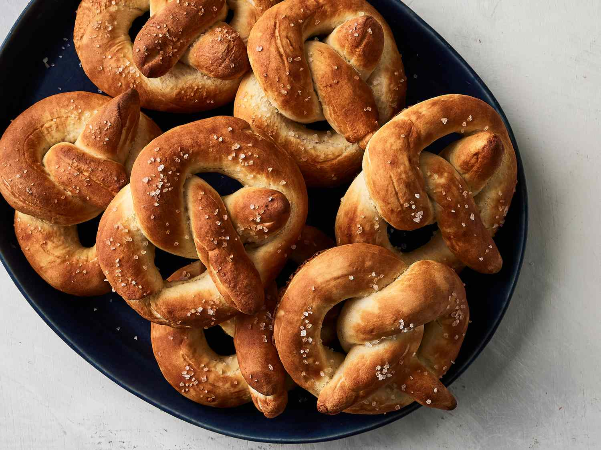

Odin Pretzels
Back to Home

Description
Homemade pretzels are a delicious and fun snack that you can make from scratch. They are soft, chewy, and can be topped with coarse salt or your favorite seasonings.
Ingredients
- 4 cups all-purpose flour
- 1 packet (2 1/4 teaspoons) active dry yeast
- 1 1/2 cups warm water (110°F or 45°C)
- 1/4 cup granulated sugar
- 1 teaspoon salt
- 1/4 cup baking soda
- Coarse sea salt (for topping)
- 1 egg (beaten, for egg wash)
- Optional toppings (e.g., garlic powder, onion powder, sesame seeds)
Steps
- In a large bowl, combine warm water, sugar, and yeast. Let it sit for about 5 minutes until frothy.
- Add flour and salt to the yeast mixture. Mix until a dough forms.
- Knead the dough on a floured surface for about 5-7 minutes until smooth and elastic.
- Place the dough in a greased bowl, cover with a damp cloth, and let it rise in a warm place for about 1 hour or until doubled in size.
- Preheat your oven to 450°F (232°C) and line a baking sheet with parchment paper.
- In a large pot, bring 10 cups of water to a boil. Add baking soda to the boiling water.
- Divide the dough into 8 equal pieces. Roll each piece into a long rope and shape it into a pretzel.
- Carefully place each pretzel into the boiling water for about 30 seconds. Remove with a slotted spoon and place on the prepared baking sheet.
- Brush each pretzel with beaten egg and sprinkle with coarse sea salt and any optional toppings.
- Bake in the preheated oven for 12-15 minutes or until golden brown.
- Let them cool slightly before serving. Enjoy your homemade pretzels!